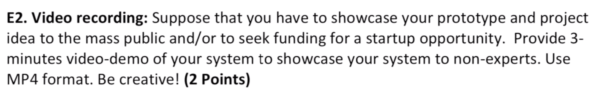
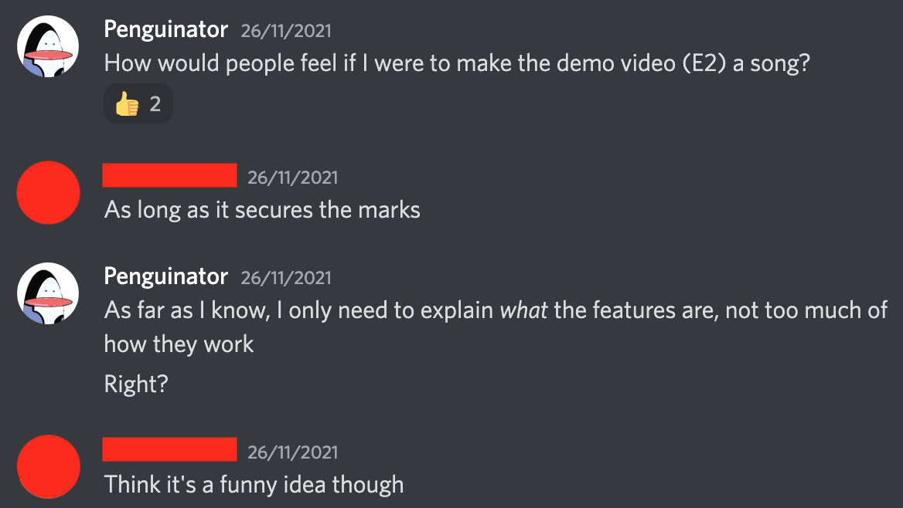
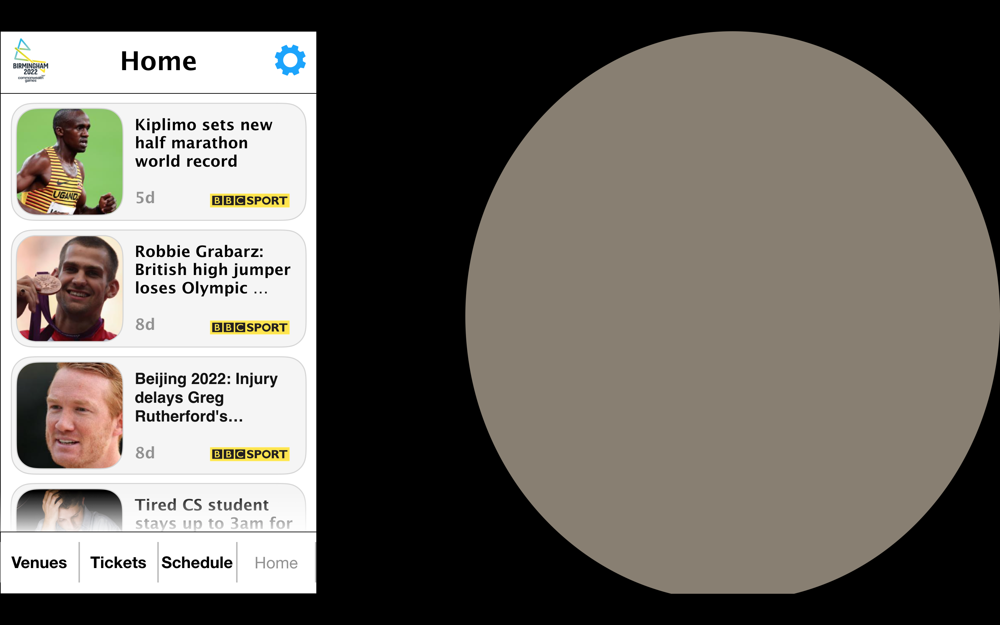
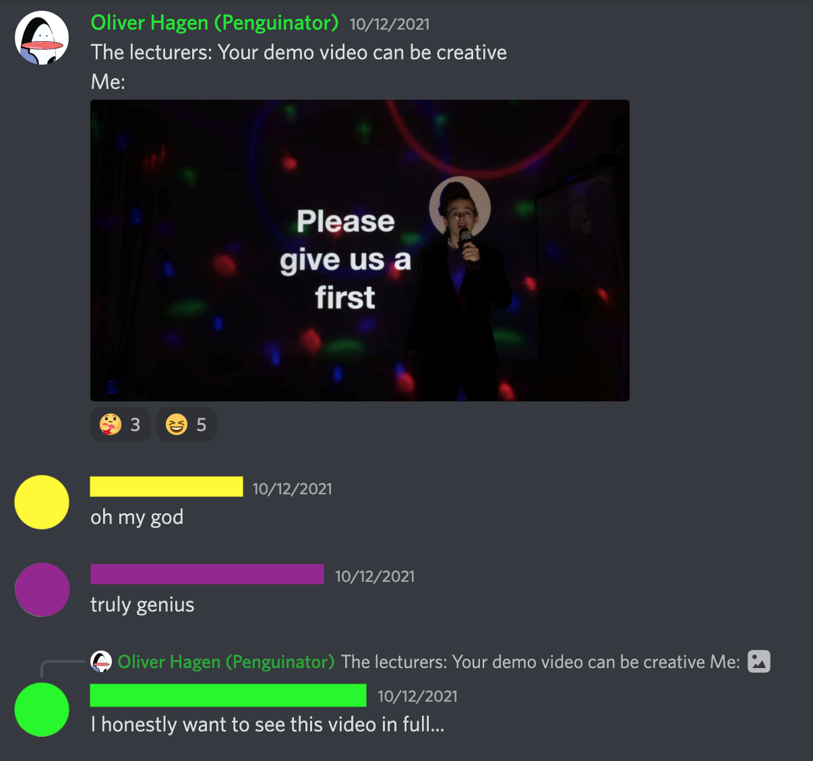
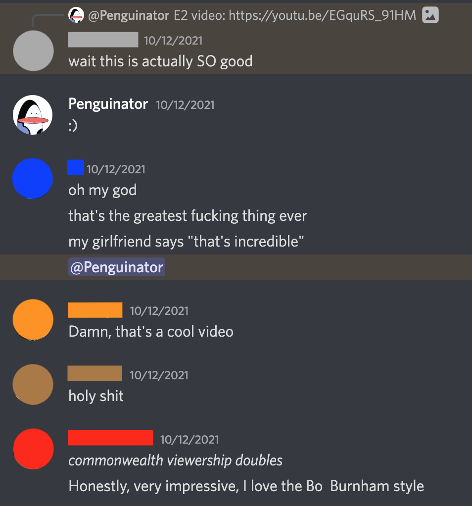
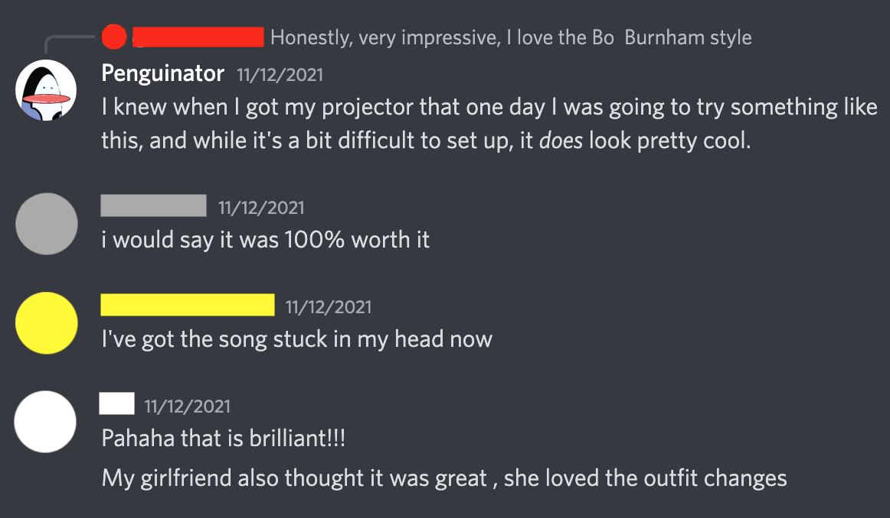
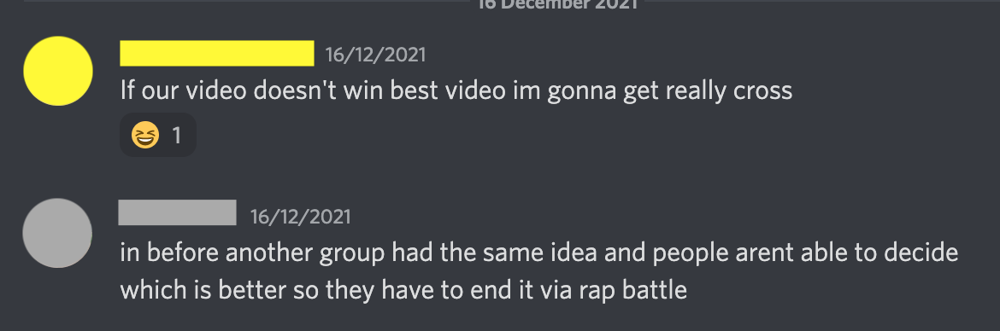
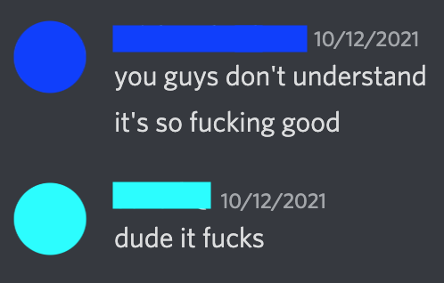
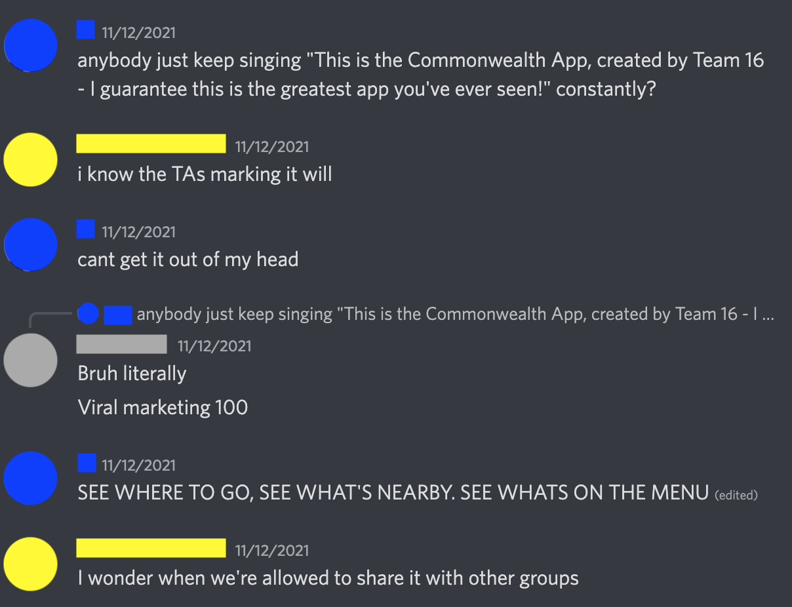
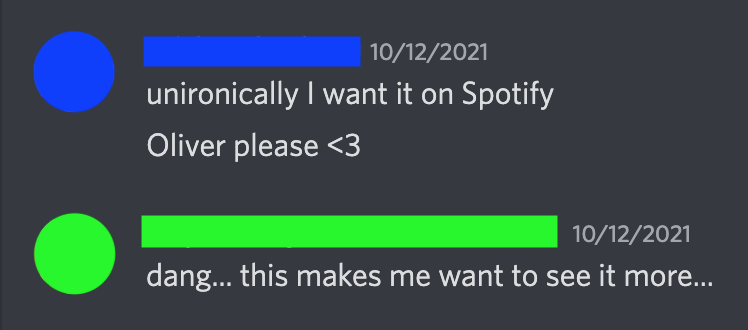

Unironically submitted as coursework for my degree.
One of my second year CS modules was a group project where we had to design an app, and one of the tasks given to us was to create a video demonstration of the app in action. I volunteered to take care of it, and managed to persuade my team to allow me some creative liberty (thanks, Group 16 :) ).
After struggling through the boring majority of the project, our team were nearing the finish line, with just a few tasks left. In meetings and via Discord, we discussed who was to do what. I approached the rest of the team with the idea:
And we're off!
I tried out some ideas for about a week and a half without any success, and feared that my long-lived writer's block was going to foil my efforts and waste the team's time. After a period of frustrated agonising, I almost gave up... and then almost the entire song fell out of me at once. I spent the rest of the day tidying it up as best as I could, then slept on it. The next morning, I finished the writing process and recorded a demo, letting my team know about my progress as I went:
Positive feedback from my team spurred me on, and after devising and recording harmonies and a proper main vocal, I had the song. The process really was freakishly quick, and the result sounded nicely distinct from my earlier, slower and harmonically denser songs. This was a purposeful difference, as I was keen to create something which would grab the attention. New wave sounds were my main inspiration, specifically Talking Heads, Blondie, Oingo Boingo and DEVO.
The final version of the song isn't my best work; I was juggling two other modules and working to tight deadlines. I also knew that the quality of the mixing wasn't going to be assessed, so I didn't stress over getting it to a particularly high standard. I am, however, really proud of the actual song. The chord progression in the middle section ('the schedule shows you the events...') is one of the best ones I think I've written so far, and it leads really nicely into the final verse. The melody isn't the best, but the harmonies that dance around it were fun to write and sing, even if some of them were really hard work ('enable location tracking...' has the low and high harmony parts switch places halfway through the line- the big jumps were difficult to land).
Unusually for me, I put a lot of effort into the video. In order to fit with the brief, the app needed to be shown in use. I wanted to include myself singing a bit to up the comedy value, and decided to make use of these creative constraints to try out a technique which Bo Burnham used to great effect in his special Inside (coincidentally, the source of my writer's block for a while- what was the use in writing anything when he'd already said everything so well?): performing with projections.
Happily, I had the vast majority of the graphics already made; this demo video was part 2 of section E of the project, with part 1 also my responsibility. E1 was to make a prototype of the app, which I did in Scratch 3 due to how easy it was to show graphics and add simple logic (more on that here). For this, I created graphics in Keynote (Apple's answer to PowerPoint) and used them as Sprites and Costumes in Scratch. I still had the original Keynote file though, with all elements in place and just crying out to be used again.
Use them I did. I converted the presentation from silly graphics programme to silly animation programme, making liberal use of motion paths and the 'magic move' slide transition. The spotlight in the video is just a circle drawn on the screen with the appropriate size and colour. After experiencing difficulties 'exporting' slideshow animations via screen recording (such as lag and reduced resolution), I found that Keynote has the ability to properly export slideshows as .mp4s. This way, I improved both the framerate and the resolution, and eliminated any stutters in the video. The downside is that there's no user cueing- the video Keynote spat out went from one transition/animation to the next with no pauses. Luckily, it was fairly easy to cut this video to the appropriate timings with the song. Once that was done, I exported the finished backing video, and was ready to begin filming.
This is where I'd put videos of the recording process... if I could find them. Unfortunately either a backup's gone awry, or I just deleted the videos when I no longer needed them. I'm assuming the latter, because storage is always a premium for me. Maybe they'll turn up later.
The actual recording process was pretty simple. I did the whole song in sections, for the costume changes. Part one was casual, normal me- hair messily tied back, t-shirt and tracksuit trousers. Part two was crazy computer science me- hair puffed out a bit, computer science society t-shirt, sunglasses and over-acting. Part three was lecturer me- suited up, hair brushed and tied back, holding a pointy stick (which was the hanging rod for my clothes- not pictured in the video is all of my clothes all over the floor, and the room in general carnage as enough space was made on that wall to film it properly). I recorded each section several times in one video, and then changed costume and rehearsed the next part for a bit before filming. Including the time between takes, I had nearly an hour of footage to look through for good takes. The entire filming process took place in one day, and straight after I finished I had to get ready for a recording session taking place that same day. I was knackered that evening.
The editing process was pretty easy really- once I'd decided which take of each section I was using, I made sure they were in sync with the music (only difficult for one small bit when part 2 transitions to part 3), and added some subtle slow zooms to make the video seem more dynamic. Occasional fast zoom-outs were quite effective for revealing the app logo in the chorus, and these were only possible because the camera spent much of the verses creeping in. Various flubs meant that even the best takes weren't perfect, so some cover up work was done, for example with the snapshots of UML diagrams which cover the screen at several points in the first chorus. The loading icon zoom out into the second verse accomplishes the same, and the bulding synth sound and zoom go together so well that it looks planned. It's like that lateral thinking card: 'honour thy mistake as hidden intention'.
From picking up the E2 task to completion of the final video was 15 days; 11 of these were spent trying to come up with a song, and the remaining 4 contained all of the writing, recording, video planning and pre-production, recording and editing. In those 4 days, I also recorded/produced several kazoo carols and a track for a band, making this perhaps the most intense period of work I've done at university so far. Lots of sleep was had after this period ended.
Here are some of the reactions my silly video garnered from my classmates:
     As per the final line of the song, we did indeed get a first for the project.
It's not been that long a time since I made this, and much of what I would say here has already been written above. It's not my best production work, but I'm very proud of the songwriting and the video, especially how well they go together. The projection+person video idea was something I'd been wanting to try out for a while, but I'd never had a reasonable excuse to pour that much energy into it (I barely did, even here- a simple graphic presentation with a voiceover would have sufficed). Technically, it went off without a hitch. Nothing looks jankier than planned, the exposure and colours are pretty good for an iPhone camera, and it's possible to forget about the projection and just look at the funny video, which is great- good effects don't make you think 'that effect is pretty nice', they're just good.
I may have to pinch some of these chords for a 'serious' song at some point. The bridge is too good.
YouTube only for now.